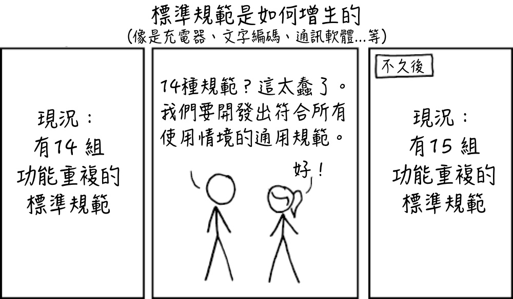

【文科生学电脑系列】或许是全网首个为文科生产力量身定做的专栏

本系列文章从文科生的角度出发，结合文科特有的工作需求，试图为文科或者更确切地说非计算机系的人打造一套量身定做的电脑文章专栏。
本专栏的重点不是具体的手把手教程，而是尽量说明电脑如何可以成为文科生的生产力工具，尤其是很多乍看上去像程序员专属的工具如何可以成为咱们文科生的得力助手。
先放中心思想：文科生学电脑不是为了装逼，也不是为了跨界，而是为了更好地完成自己的工作。
实践出真知
文科生学电脑比电脑系更加务实：我们所学的一切都是为了具体的文科工作而学，而不会为了所谓的知识储备而学（毕竟我们自己的领域也有一堆东西要学）。功利心态更强，反而学习效率更高。从实践和具体应用场景出发，因此更加有乐趣。
本文会从文科的需求出发，然后一切电脑学习都是为了更好地完成文科的需求。